Can you keep a Secret?
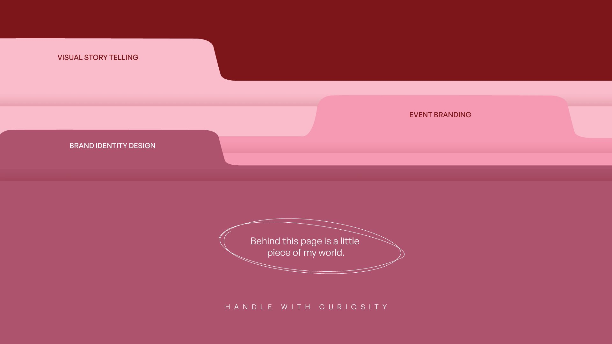
VISUAL STORY TELLINGEVENT BRANDINGBRAND IDENTITY DESIGNBehind this page is a littlepiece of my world.H A N D L EW I T HC U R I O S I T Y

I’m Chinaza, a Brand Designer with over four years of experience in Nigeria’s creative industry.Hi!I currently work as a Associate Designer at JT Agency where I specialize in branding, graphic design, visual storytelling,and art direction. Over the years, I’ve had the opportunity to work with brands and organizations to develop strategiccreative solutions that solve real problems and deliver meaningful value.But how did I get into design?It started with curiosity.I had always been fascinated by design, even before I knew what it meant to be a designer. I remember being the girl whowondered how gradients were made, how a particular banner or poster came together, or what made one visual feel morecompelling than another.Then, while I was in school, I stumbled upon a free design tutorial.That small opportunity gave me a way to turn my curiosity into a skill. The girl who used to wonder how designs weremade gradually became the girl making them.Today, I design from that same place of curiosity, combined with my love for colour, shape, typography, and visualstorytelling. I’m passionate about using creativity and strategic thinking to build meaningful visual experiences, solveproblems, drive growth, and create impact.For me, design isn’t just about making things look good.It’s about understanding, communicating, and creating something that matters.SILAS CHINAZA PORTFOLIO||01
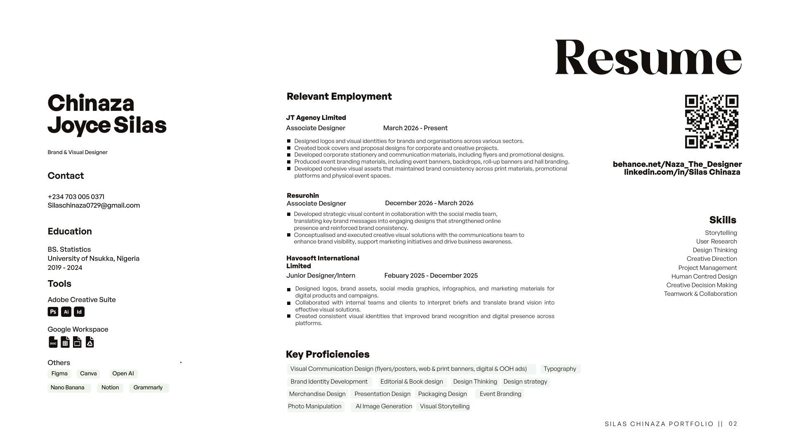
ResumeChinazaJoyce SilasBrand & Visual DesignerContact+234 703 005 0371Silaschinaza0729@gmail.comEducationBS. StatisticsUniversity of Nsukka, Nigeria2019 - 2024ToolsJT Agency LimitedMarch 2026 - PresentAssociate DesignerDesigned logos and visual identities for brands and organisations across various sectors.Created book covers and proposal designs for corporate and creative projects.Developed corporate stationery and communication materials, including flyers and promotional designs.Produced event branding materials, including event banners, backdrops, roll-up banners and hall branding.Developed cohesive visual assets that maintained brand consistency across print materials, promotionalplatforms and physical event spaces.ResurchinAssociate DesignerGoogle Workspacebehance.net/Naza_The_Designerlinkedin.com/in/Silas ChinazaDecember 2026 - March 2026Developed strategic visual content in collaboration with the social media team,translating key brand messages into engaging designs that strengthened onlinepresence and reinforced brand consistency.Conceptualised and executed creative visual solutions with the communications team toenhance brand visibility, support marketing initiatives and drive business awareness.Havosoft InternationalLimitedJunior Designer/InternSkillsFebuary 2025 - December 2025Designed logos, brand assets, social media graphics, infographics, and marketing materials fordigital products and campaigns.Collaborated with internal teams and clients to interpret briefs and translate brand vision intoeffective visual solutions.Created consistent visual identities that improved brand recognition and digital presence acrossplatforms.Adobe Creative SuiteStorytellingUser ResearchDesign ThinkingCreative DirectionProject ManagementHuman Centred DesignCreative Decision MakingTeamwork & CollaborationKey ProficienciesOthersFigmaRelevant EmploymentCanvaNano BananaOpen AINotionGrammarlyVisual Communication Design (flyers/posters, web & print banners, digital & OOH ads)Brand Identity DevelopmentEditorial & Book designDesign ThinkingMerchandise DesignPresentation DesignPackaging DesignPhoto ManipulationAI Image GenerationVisual StorytellingTypographyDesign strategyEvent BrandingSILAS CHINAZA PORTFOLIO ||02
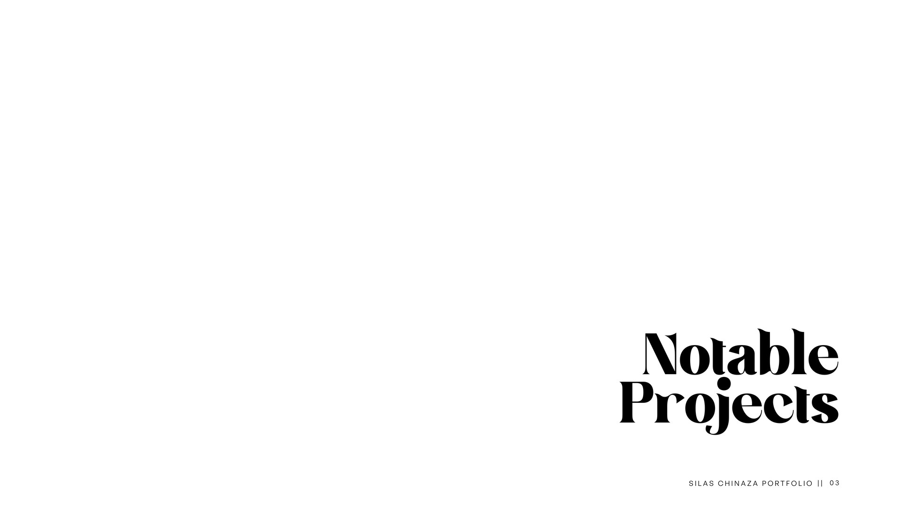
NotableProjectsSILAS CHINAZA PORTFOLIO ||03

RUN CLUB ABUJA - 2026JT AGENCYCHM26 — Rhythm for a Course & CauseRun Club Abuja is a growing community of over 200 fitness enthusiasts promoting healthy living throughrunning, walking and wellness engagement. Its annual Charity Half Marathon, launched in 2021, provides aplatform to give back to underserved communities.For the 2026 edition, themed around reducing infant mortality, we developed a visual identity guided by"Rhythm for a Course & Cause." Inspired by the connection between running and the human heartbeat, thevisual direction explored flowing lines, rhythmic patterns and heartbeat inspired elements to communicatemovement, energy and purpose. Through bold typography, vibrant colours, expressive photography andintentional messaging, we created a cohesive campaign identity that extended across promotional materialsand environmental branding, including the event's start and finish masts.ROLES AND RESPONSIBILITIES• Curated the branding and visual direction for the 2026 edition of the event.•••Created event/spatial branding materials for both editions (includingprint banners, screen graphics, livestream materials, OOH, andpromotional materials and event props).Designed merchandise and keepsake materials for guests and speakersof the event.Managed stakeholders and client expectations to the success of the event.SILAS CHINAZA PORTFOLIO ||04

SILAS CHINAZA PORTFOLIO ||05
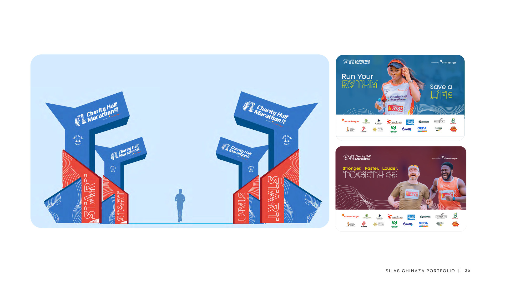
SILAS CHINAZA PORTFOLIO ||06

Every Stride Carries AHeartbeatSILAS CHINAZA PORTFOLIO ||07
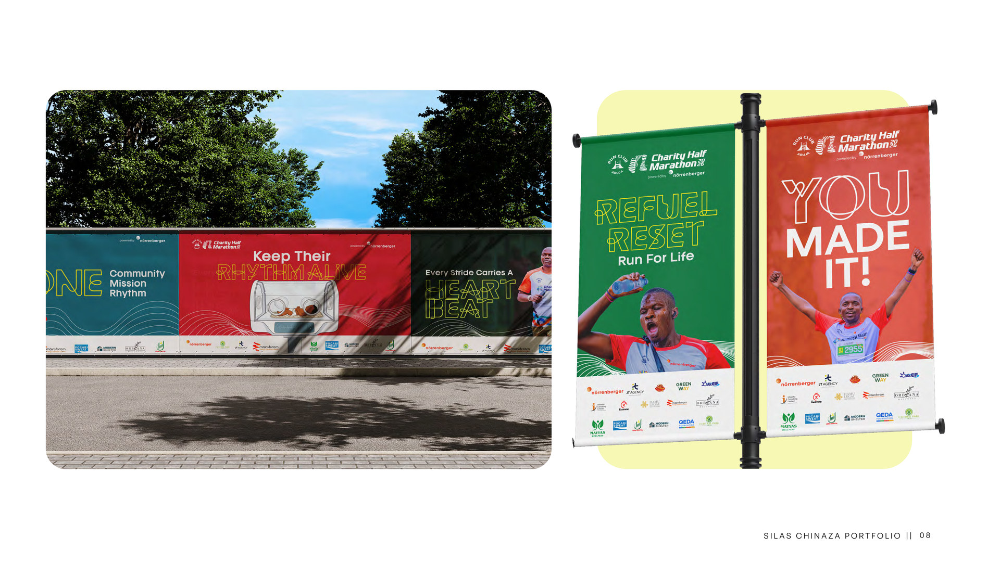
SILAS CHINAZA PORTFOLIO ||08
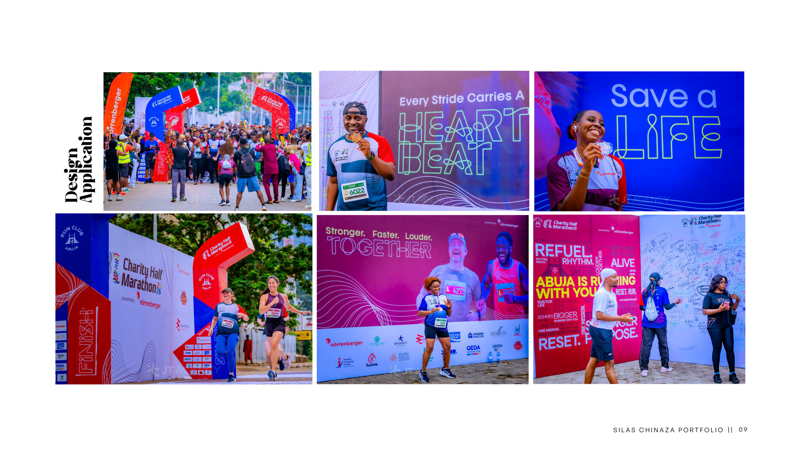
DesignApplicationSILAS CHINAZA PORTFOLIO ||09

NIGERIA REVENUE SERVICE - 2026JT AGENCYThe project focused on creating awareness around the evolving revenue administration framework withinNigeria's solid minerals sector, following the transfer of mining royalty collection responsibilities to the NigeriaRevenue Service (NRS) in January 2026. The goal was to communicate the new framework and broader taxreforms in a way that was clear and accessible to industry stakeholders, while promoting transparency, effi-ciency and accountability.••Curated the branding and visual direction for the event.Created event/spatial branding materials for both editions (including print banners,screen graphics, livestream materials, OOH, and promotional materials and event props).• Designed merchandise and keepsake materials for guests and speakers of the event.• Managed stakeholders and client expectations to the success of the event.I contributed to developing a visual approach that could be applied consistently across the campaign's com-munication materials. My approach involved exploring the relationship between the NRS identity and the solidminerals sector, incorporating imagery inspired by resources such as coal, gold and emeralds alongside NRSbrand elements to create a cohesive visual language. I designed key materials for the event,F stage backdrop,and assisted with the stakeholder sensitisation brochure.The resulting visual experience brought together the different event touchpoints in a consistent and engagingmanner, receiving positive feedback from the client.SILAS CHINAZA PORTFOLIO||10
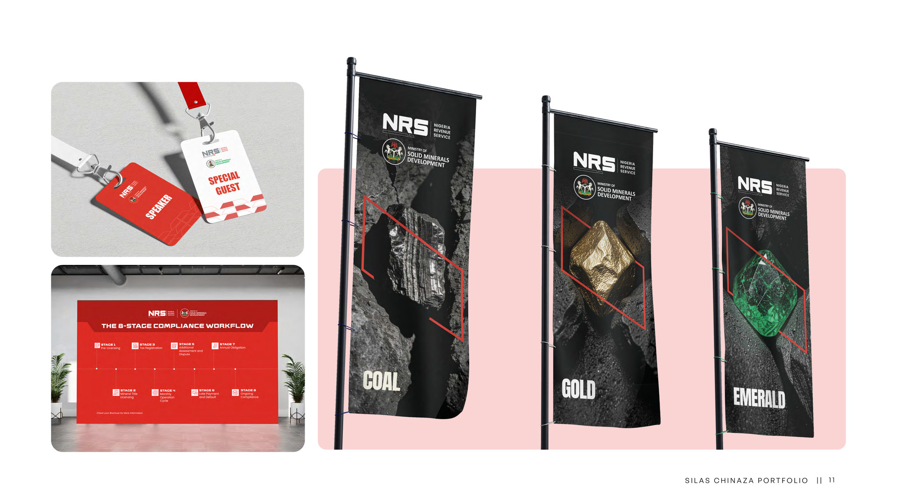
SILAS CHINAZA PORTFOLIO||11
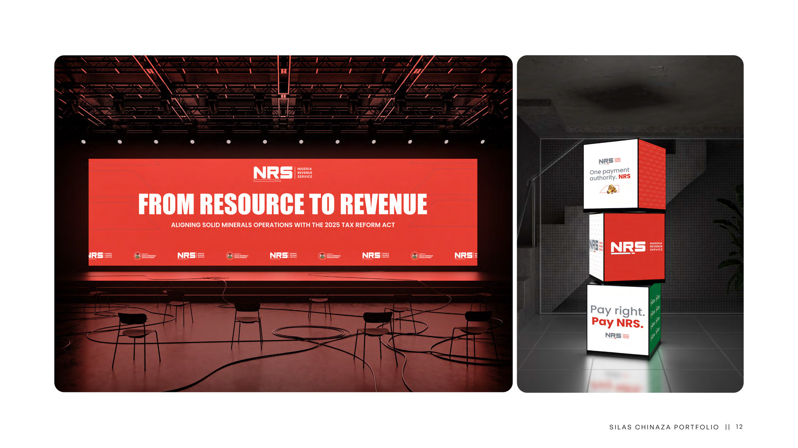
SILAS CHINAZA PORTFOLIO||12

DesignApplicationSILAS CHINAZA PORTFOLIO||13
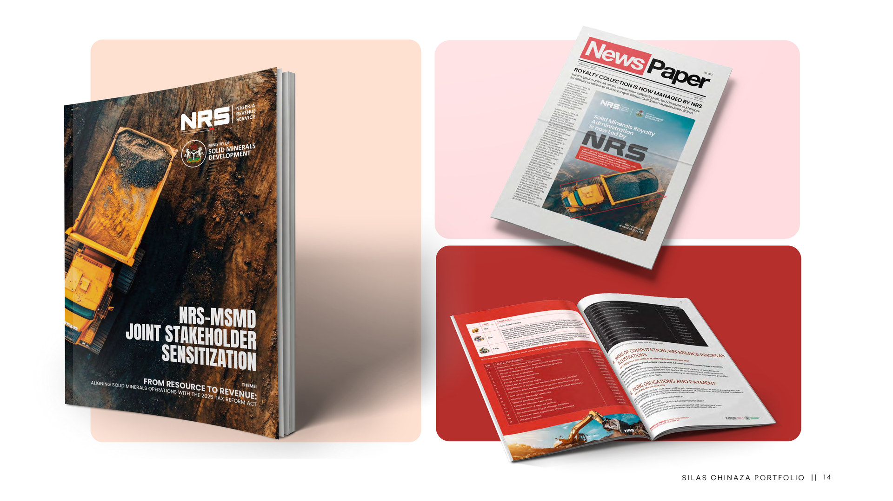
SILAS CHINAZA PORTFOLIO||14
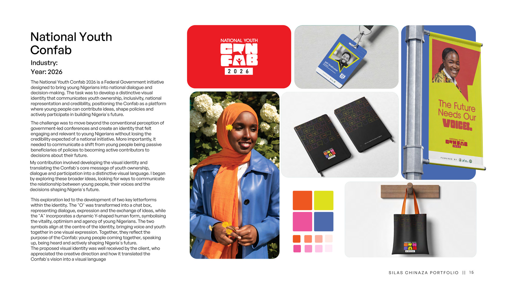
National YouthConfabIndustry:Year: 2026The National Youth Confab 2026 is a Federal Government initiativedesigned to bring young Nigerians into national dialogue anddecision-making. The task was to develop a distinctive visualidentity that communicates youth ownership, inclusivity, nationalrepresentation and credibility, positioning the Confab as a platformwhere young people can contribute ideas, shape policies andactively participate in building Nigeria's future.The challenge was to move beyond the conventional perception ofgovernment-led conferences and create an identity that feltengaging and relevant to young Nigerians without losing thecredibility expected of a national initiative. More importantly, itneeded to communicate a shift from young people being passivebeneficiaries of policies to becoming active contributors todecisions about their future.My contribution involved developing the visual identity andtranslating the Confab's core message of youth ownership,dialogue and participation into a distinctive visual language. I beganby exploring these broader ideas, looking for ways to communicatethe relationship between young people, their voices and thedecisions shaping Nigeria's future.This exploration led to the development of two key letterformswithin the identity. The "O" was transformed into a chat box,representing dialogue, expression and the exchange of ideas, whilethe "A" incorporates a dynamic Y-shaped human form, symbolisingthe vitality, optimism and agency of young Nigerians. The twosymbols align at the centre of the identity, bringing voice and youthtogether in one visual expression. Together, they reflect thepurpose of the Confab: young people coming together, speakingup, being heard and actively shaping Nigeria's future.The proposed visual identity was well received by the client, whoappreciated the creative direction and how it translated theConfab's vision into a visual languageNATIONAL YOUTHNf 2 0 2 6 bSILAS CHINAZA PORTFOLIO||15

Jana StudioIndustry:Year: 2026The brief was to develop a distinctive visual identityfor Jana Studio, a creative media studio focused onstorytelling through media and technology. Thechallenge was to translate this purpose into ameaningful visual identity without relying onconventional media symbols.I led the creative exploration and identitydevelopment, from concept creation to logo designand visual direction. I explored the relationshipbetween storytelling, media and technology,drawing inspiration from the tools used to captureand create media. This led to a camera-inspiredsymbol shaped into the letter J, connecting thebrand name with its creative purpose while givingthe identity a distinctive visual character.The proposed identity was approved, establishing arecognisable brand mark and a visual direction thatreflects Jana Studio's approach to storytelling.anaS T U D I O SanaS t u d i oSILAS CHINAZA PORTFOLIO||16

Book CoverDesignsSILAS CHINAZA PORTFOLIO||17

SILAS CHINAZA PORTFOLIO||18

SILAS CHINAZA PORTFOLIO||19

SILAS CHINAZA PORTFOLIO ||20

SILAS CHINAZA PORTFOLIO||21

SILAS CHINAZA PORTFOLIO ||22

OtherProjectsSILAS CHINAZA PORTFOLIO ||23

NNPCSCREEN DESIGNSSILAS CHINAZA PORTFOLIO ||24
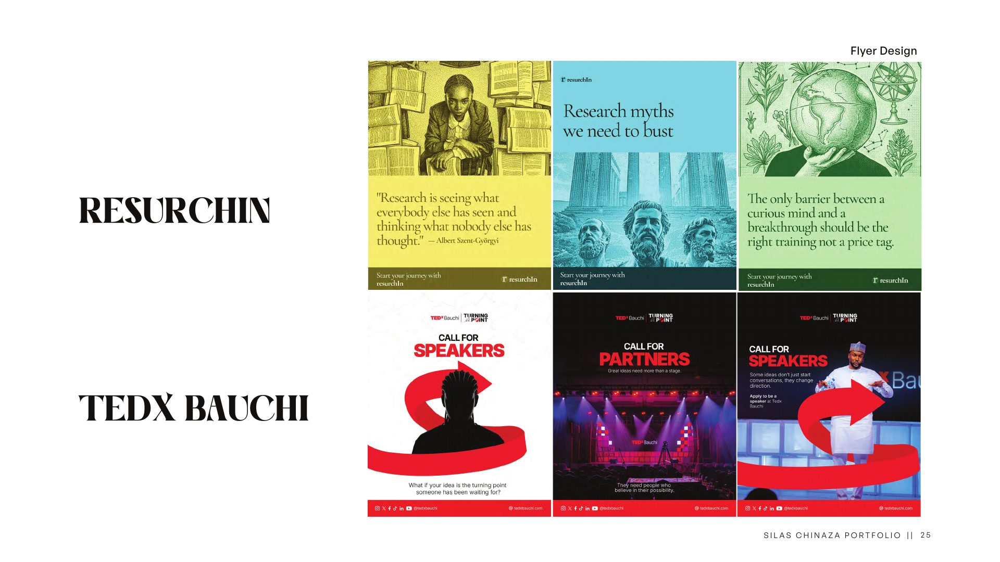
Flyer DesignRESURCHINTEDX BAUCHISILAS CHINAZA PORTFOLIO ||25
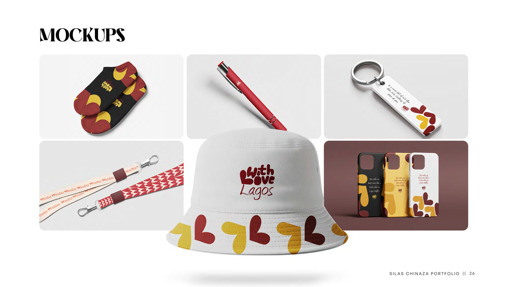
MOCKUPSSILAS CHINAZA PORTFOLIO ||26
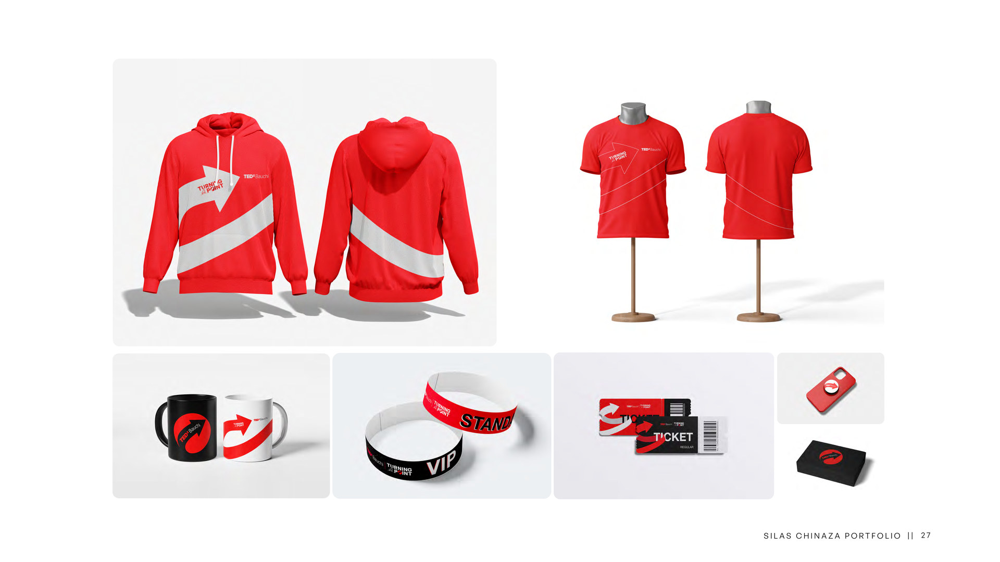
SILAS CHINAZA PORTFOLIO ||27
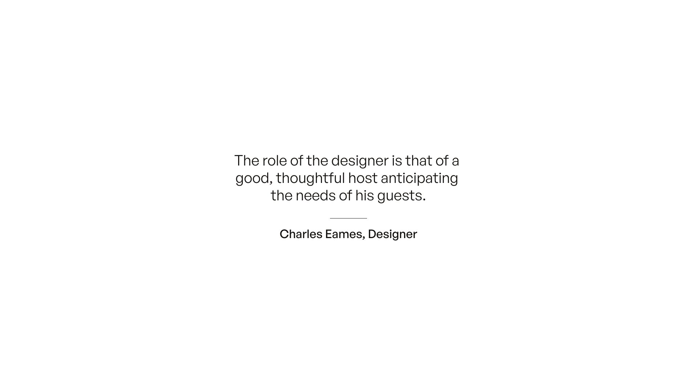
The role of the designer is that of agood, thoughtful host anticipatingthe needs of his guests.Charles Eames, Designer

Silas Chinaza Joyce+2347030050371silaschinaza0725@gmail.comThank YouL E T ’ SB U I L D